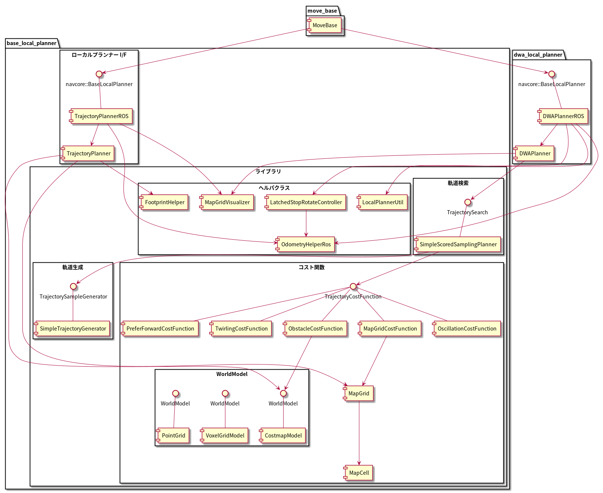

dwa_local_planner¶
目次
1 概要¶
このパッケージは、平面上のローカルロボットナビゲーションを行うもので、Dynamic Window Approach の方式で実装しています。 従うべきグローバルプランとコストマップが与えられると、コントローラーは速度ベースのコマンドを生成して モバイルベース に送信します。 このパッケージは、 footprint (接触範囲) を凸多角形または円として表現できるロボットをサポートします。設定項目はROSパラメーターとして公開されており、起動ファイルで設定できます。またこのプランナーのパラメーターは動的に再設定可能です。 このパッケージのROSラッパーは、nav_core パッケージで指定されたBaseLocalPlannerインターフェースに準拠しています。
- 管理状態：管理済み
- 管理者：David V. Lu!! <davidvlu AT gmail DOT com>, Michael Ferguson <mfergs7 AT gmail DOT com>, Aaron Hoy <ahoy AT fetchrobotics DOT com>
- 著者： Eitan Marder-Eppstein, contradict@gmail.com
- ライセンス： BSD
- ソース： git https://github.com/ros-planning/navigation.git （ブランチ：melodic-devel）
2 パッケージの構成¶
このパッケージは、move_base に組み込まれるローカルプランナー(DWAPlannerROS)と、実装クラス(DWAPlanner)からなっています。 下位のアルゴリズムの実装には、 base_local_planner パッケージのクラスを使っています。
コンポーネント図
3 アルゴリズム¶
3.1 パッケージの目的¶
dwa_local_plannerパッケージは、モバイルベースを平面上で運転するコントローラーを提供します。 このコントローラーは、パスプランナーをロボットに接続します。 プランナーは、マップを使い、ロボットがスタートからゴール位置に到達するまでの運動の軌道を作成します。 その過程で、プランナーは、ロボットの周囲に、グリッドマップとして表される価値関数を作成します。 この価値関数は、グリッドセルを通過するコストを表現します。 コントローラーの仕事は、この価値関数を使用して、ロボットに送信する速度 (縦方向速度, 横方向速度, 回転速度) を決定することです。 (移動方向の定義については 座標系 参照。)

出典: http://wiki.ros.org/dwa_local_planner
3.2 ローカルプランニングの処理概要¶
Dynamic Window Approach (DWA) アルゴリズムの基本的な考え方は次のとおりです。
- ロボットの速度空間 (縦方向速度, 横方向速度, 回転速度) を離散的にサンプリングします。
- サンプリングされた速度ごとに、ロボットの現在の状態から フォワードシミュレーション を実行して、サンプリングされた速度を一定（短い）時間適用した場合にどう動くかを予測します。(軌道の予測)
- フォワードシミュレーションから得られた各軌道を評価 (スコア) します。評価には、障害物への近さ、ゴール地点への近さ、グローバルパスへの近さ、速度などの特性をとりこんだ尺度を使用します。 不正な軌道（障害物と衝突する軌道）は破棄します。
- 最高得点の軌道を見つけだし、その速度をロボットに送信します。
- 以上の手順を繰り返します。
便利なリファレンス：
- D. Fox, W. Burgard, and S. Thrun. "The dynamic window approach to collision avoidance". ローカルコントロールへの Dynamic Window Approach。
- Alonzo Kelly. "An Intelligent Predictive Controller for Autonomous Vehicles". 過去の同様のアプローチで制御するシステム。
- Brian P. Gerkey and Kurt Konolige. "Planning and Control in Unstructured Terrain". LAGRロボットで使用される Trajectory Rollout アルゴリズムの説明。
3.3 速度空間のサンプリング¶
ロボットの速度空間 (縦方向速度, 横方向速度, 回転速度) を離散的にサンプリングします。
サンプリングする範囲は、
- 縦方向速度のサンプリング上限速度 = 現在の縦方向速度 + 縦方向加速度の上限 * コントローラー呼び出し周期
ただし最大で 縦方向速度の上限(max_vel_x)
- 縦方向速度のサンプリング下限速度 = 現在の縦方向速度 - 縦方向加速度の上限 * コントローラー呼び出し周期
ただし最小で 縦方向速度の下限(min_vel_x)
- 横方向速度のサンプリング上限速度 = 現在の横方向速度 + 横方向加速度の上限 * コントローラー呼び出し周期
ただし最大で 横方向速度の上限(max_vel_y)
- 横方向速度のサンプリング下限速度 = 現在の横方向速度 - 横方向加速度の上限 * コントローラー呼び出し周期
ただし最小で 横方向速度の下限(max_vel_y)
- 回転速度のサンプリング上限速度 = 現在の回転速度 + 回転加速度の上限 * コントローラー呼び出し周期
ただし最大で 回転速度絶対値の上限(max_vel_theta)
- 回転速度のサンプリング下限速度 = 現在の回転速度 - 回転加速度の上限 * コントローラー呼び出し周期
ただし最小で 回転速度絶対値の上限(max_vel_theta) の負値
(コントローラー呼び出し周期は、controller_frequency パラメーターの逆数であり、既定値は 0.05s です)
です。 上式は DWAの場合ですが、base_local_planner と同様に Trajectory Rollout も選択でき、その場合上式の 「コントローラー呼び出し周期」は、「フォワードシミュレーション時間 」に置き換わります。
求めたサンプリング範囲を等分割し、"サンプリング数 "個のサンプル値を抽出します。 さらに、正と負のサンプル値の間に、0のサンプル値を挿入します。
その場回転や横移動もサンプリング速度空間に含まれているため、base_local_plannerのような追加の専用サンプリング処理はありません。
3.4 軌道の計算¶
軌道の計算方法は base_local_planner と同様です。
ただしフォワードシミュレーションのステップ数は、定義式が少し異なり、
「 縦横方向サンプリング速度の合成値 * フォワードシミュレーション時間 / 距離ステップサイズ(sim_granularity) 」
または
「サンプリング回転速度の絶対値 * フォワードシミュレーション時間 / 角度ステップサイズ(angular_sim_granularity) 」 (注：フォワードシミュレーション時間が掛かる点が base_local_plannerと異なります)
のどちらか大きい方で決まります。
また、ロボットのサンプリング速度をチェックし、次のような制限を超える軌道は破棄します。
- 縦横方向合成速度が 上限(max_trans_vel) を超える軌道
- 縦横方向合成速度が 下限(min_trans_vel) を下回る ＆ 回転速度絶対値が 下限(min_vel_theta) を下回る軌道
3.5 軌道の評価¶
軌道のコストには次のものがあります。
| コスト名 | 内容 | 説明 | 重みパラメーター | 管理クラス |
|---|---|---|---|---|
| obstacle_costs | 障害物コスト | base_local_plannerの occ_cost 参照 | occdist_scale | ObstacleCostFunction |
| path_costs | グローバルパスからの距離 | base_local_plannerの path_dist 参照 | path_distance_bias | MapGridCostFunction |
| goal_costs | ローカルゴールからの距離 | base_local_plannerの goal_dist 参照 | goal_distance_bias | MapGridCostFunction |
| alignment_costs | グローバルパスへの向き (ROS Wiki 未記載) | ロボットが forward_point_distance だけ前進した位置での path_costs | path_distance_bias | MapGridCostFunction |
| goal_front_costs | ローカルゴールへの向き (ROS Wiki 未記載) | ロボットが forward_point_distance だけ前進した位置での goal_costs (その場回転の軌道の追加評価 と同様。ただしその場回転以外でも有効。) | goal_distance_bias | MapGridCostFunction |
| twirling_costs | スピンコスト(option) (ROS Wiki 未記載) | 急カーブの軌道ほど大きくなるため、カーブの緩い軌道を選好します。ただしデフォルトの重みは0です | twirling_scale | TwirlingCostFunction |
| oscillation_costs | 振動コスト (ROS Wiki 未記載) | base_local_plannerの 振動抑制 参照。ただし、振動フラグが設定されてから移動距離が oscillation_reset_dist を超えた場合だけでなく、回転角度が oscillation_reset_angle を超えた場合もフラグをリセットします。 | コスト負の軌道は破棄 | OscillationCostFunction |
これらのコストを、所定の重み付け（カスタマイズ可能）を掛け合わせて合算し、与えられた軌道のコストとします。 各軌道ごとにコストを算出し、最も低コストの軌道を結果の軌道とします。
3.6 ゴール地点到達時の処理¶
ローカルプランナーがロボットを停止すべき場所に正確に停止させるのが理想です。 しかし実際には、センサーのノイズとアクチュエータの不確実性によりロボットが目標地点を行き過ぎて、延々と切り返しを続けてしまうことがあります。 それを防ぐため、ロボットがゴール地点に十分近づくと走行を停止し、指示されたゴール方向へその場回転のみ行うようにします。 それは次の手順で行います。
- コントローラーの各サイクルで、ロボットがグローバルゴールの近傍に到達したか判定します。
- ロボットからゴール地点までの距離が、xy_goal_tolerance 以下の場合、ゴール地点に到達済みと判定します。
- ロボットがゴール地点に到達していれば以下の最終補正処理に移行します。
- ロボットを停止させます。
- ロボットを許される加速度の範囲内で減速し、停止させます。
- ロボットが停止したかの判定には、XY合成速度と回転速度がしきい値(trans_stopped_vel, theta_stopped_vel)以下であるかを調べます。
- ロボットが停止した後、ゴール方向にその場回転を行います。
- ロボットの向きがゴール方向と合っているかを判定します。 ロボットの現在の向きと指示されたゴール時の方向とのなす角が、yaw_goal_tolerance 以下か判定します。
- ロボットの向きが合っていない場合、ゴール方向へその場回転を行います。
- ロボットの向きが合っていれば、ゴール地点に最終到達したとして、速度0を指令します。
最終補正処理の途中でゴール地点の許容範囲外に出た場合は、最終補正処理をやめて通常の DWAに戻ります。 ただし、ゴール許容誤差ラッチフラグ が trueの場合は、ゴール地点から外れても DWAに戻らず最終補正処理を続行します。
4. ローカルプランナークラス DWAPlannerROS¶
dwa_local_planner::DWAPlannerROS オブジェクトは、dwa_local_planner::DWAPlanner オブジェクトの機能を公開する C++ ROSラッパー です。 このオブジェクトは、初期化時に指定されたROS名前空間（以降、nameと仮表記）で動作します。 このオブジェクトは、nav_core パッケージにある nav_core::BaseLocalPlanner インターフェースに準拠しています。
dwa_local_planner::DWAPlannerROS オブジェクトの作成例:
1 #include <tf/transform_listener.h>
2 #include <costmap_2d/costmap_2d_ros.h>
3 #include <dwa_local_planner/dwa_planner_ros.h>
4
5 ...
6
7 tf::TransformListener tf(ros::Duration(10));
8 costmap_2d::Costmap2DROS costmap("my_costmap", tf);
9
10 dwa_local_planner::DWAPlannerROS tp;
11 tp.initialize("my_dwa_planner", &tf, &costmap);
4.1 Subscribe トピック¶
| トピック名 | 型 | 内容 |
|---|---|---|
| odom | nav_msgs/Odometry | ローカルプランナーにロボットの現在の速度を与える走行距離情報。 このメッセージの速度情報は、 TrajectoryPlannerROSオブジェクトに含まれるコストマップのrobot_base_frameと同じ座標フレームにあると想定されます 。 robot_base_frameパラメーターについては、 costmap_2d パッケージを参照してください。 |
4.2 Publish トピック¶
| トピック名 | 型 | 内容 |
|---|---|---|
| ~<name>/global_plan | nav_msgs/Path | ローカルプランナーが現在従おうとしているグローバルプランの一部。 主に視覚化の目的で使用されます。 |
| ~<name>/local_plan | nav_msgs/Path | 最後のサイクルで最高得点を獲得したローカルプランまたは軌道。 主に視覚化の目的で使用されます。 |
4.3 パラメーター¶
dwa_local_planner::DWAPlannerROS ラッパーの動作をカスタマイズするために設定可能なROS パラメーター が多数あります。 これらのパラメーターは、ロボット構成、目標許容誤差、フォワードシミュレーション、軌道スコアリング、振動防止、グローバルプランなど、いくつかのカテゴリに分類されます。 これらのパラメーターのほとんどは、 dynamic_reconfigure を使用して変更することができ、実行中のシステムでローカルプランナーを容易に調整できます。
4.3.1 ロボット構成パラメーター¶
| パラメーター名 | 内容 | 型 | 単位 | デフォルト |
|---|---|---|---|---|
| ~<name>/acc_lim_x | ロボットの縦方向加速度の上限 | double | m/s^2 | 2.5 |
| ~<name>/acc_lim_y | ロボットの横方向加速度の上限 | double | m/s^2 | 2.5 |
| ~<name>/acc_lim_theta | ロボットの回転加速度の上限 | double | rad/s^2 | 3.2 |
| ~<name>/acc_lim_trans | ロボットの並進運動加速度の上限。現在のソースでは無効なパラメーター (ROS Wiki 未記載) | double | m/s^2 | 0.1 |
| ~<name>/max_vel_trans | ロボットの並進運動速度の絶対値の上限。旧max_trans_vel。 (縦方向と横方向の合成速度の上限。これを超える軌道は破棄します。) | double | m/s | 0.55 |
| ~<name>/min_vel_trans | ロボットの並進運動速度の絶対値の下限。旧min_trans_vel。(縦方向と横方向の合成速度の下限。これと min_vel_theta のどちらも満たさない軌道は破棄します。) | double | m/s | 0.1 |
| ~<name>/max_vel_x | ロボットの縦方向速度の上限 | double | m/s | 0.55 |
| ~<name>/min_vel_x | ロボットの縦方向速度の下限。バックの動きでは負の値 | double | m/s | 0.0 |
| ~<name>/max_vel_y | ロボットの横方向速度の上限。(左方向は正の値) | double | m/s | 0.1 |
| ~<name>/min_vel_y | ロボットの横方向速度の下限。(右方向は負の値) | double | m/s | -0.1 |
| ~<name>/max_vel_theta | ロボットの回転速度絶対値の上限。旧max_rot_vel | double | rad/s | 1.0 |
| ~<name>/min_vel_theta | ロボットの回転速度絶対値の下限。旧min_rot_vel。 (これと min_vel_trans のどちらも満たさない軌道は破棄します。) | double | rad/s | 0.4 |
4.3.2 ゴール許容誤差パラメーター¶
| パラメーター名 | 内容 | 型 | 単位 | デフォルト |
|---|---|---|---|---|
| ~<name>/yaw_goal_tolerance | ゴール地点に到達したときの、コントローラーの向き(回転角)の許容誤差 | double | rad | 0.05 |
| ~<name>/xy_goal_tolerance | ゴール地点に到達したときの、コントローラーの 2D平面上距離の許容誤差 | double | m | 0.10 |
| ~<name>/latch_xy_goal_tolerance | ゴール許容誤差ラッチフラグ。trueの場合、ロボットがゴール地点に到達すると、後はその場回転のみ行います。回転の間にゴール許容誤差の範囲外になることもあります。(falseの場合は、範囲外に出たら通常の動作に戻ります。) | bool | - | false |
| ~<name>/trans_stopped_vel | 最終補正にあたって停止したとみなす X-Y合成速度。停止後その場回転します。(ROS Wiki 未記載) | double | m/s | 0.1 |
| ~<name>/theta_stopped_vel | 最終補正にあたって停止したとみなす回転速度。停止後その場回転します。(ROS Wiki 未記載) | double | rad/s | 0.1 |
4.3.3 フォワードシミュレーションパラメーター¶
| パラメーター名 | 内容 | 型 | 単位 | デフォルト |
|---|---|---|---|---|
| ~<name>/sim_time | 軌道をフォワードシミュレーションする時間 | double | s | 1.7 |
| ~<name>/sim_granularity | 与えられた軌道上の点間のステップサイズ | double | m | 0.025 |
| ~<name>/angular_sim_granularity | 与えられた軌道上の角度サンプル間のステップサイズ | double | rad | 0.1 |
| ~<name>/vx_samples | 速度空間の縦方向速度を探索するときに使用するサンプルの数 | integer | - | 3 |
| ~<name>/vy_samples | 速度空間の横方向速度を探索するときに使用するサンプルの数 | integer | - | 10 |
| ~<name>/vth_samples | 速度空間の回転速度を探索するときに使用するサンプルの数 | integer | - | 20 |
| ~<name>/controller_frequency | このコントローラーが呼び出される頻度。 コントローラーの名前空間に設定されていない場合、searchParamを使用して親の名前空間からパラメーターを読み取ります。 すなわち、move_base とともに使用する場合は move_base の "controller_frequency"パラメーターを設定するだけでよく 、このパラメーターを未設定のままにしておけます。 | double | Hz | 20.0 |
4.3.4 軌道スコアリングパラメーター¶
各軌道のスコアリングに使用されるコスト関数は、次の形式です。:
cost =
path_distance_bias * (軌道終端からパスへの距離(m))
+ goal_distance_bias * (軌道終端からローカルゴールへの距離(m))
+ occdist_scale * (軌道中の最大障害物コスト。単位は障害物コスト (0-254))
+ path_distance_bias * (グローバルパスへの向きのコスト(m))
+ goal_distance_bias * (ローカルゴールへの向きのコスト(m))
+ twirling_scale * (スピンコスト(rad/s))
| パラメーター名 | 内容 | 型 | 単位 | デフォルト |
|---|---|---|---|---|
| ~<name>/path_distance_bias | コントローラーがパスにどれだけ近づこうとするかの重み | double | 1/m | 32 |
| ~<name>/goal_distance_bias | コントローラーがローカルの目標にどれだけ近づこうとするかの重み。このパラメーターは速度も制御します。 | double | 1/m | 24 |
| ~<name>/occdist_scale | コントローラーが障害物をどれだけ回避しようとするかの重み | double | - | 0.01 |
| ~<name>/twirling_scale | スピンコストの重み | double | s/rad | 0 |
| ~<name>/forward_point_distance | 追加のスコアリングポイントを配置するためのロボット中心点からの距離。 (ロボットの向きの評価で使用します。base_local_planner の heading_lookahead に相当します。) | double | m | 0.325 |
| ~<name>/stop_time_buffer | 軌道が有効と見なされるために、衝突前にロボットが停止しなければならない時間。 (現状のソースコードでは無効) | double | s | 0.2 |
| ~<name>/scaling_speed | ロボットの footprint のスケーリングを開始する速度の絶対値。 (現状のソースコードではスケーリングは行っていないため無効) | double | m/s | 0.25 |
| ~<name>/max_scaling_factor | ロボットの footprint をスケーリングする最大係数。 (現状のソースコードではスケーリングは行っていないため無効) | double | - | 0.2 |
| ~<name>/publish_cost_grid | プランナーが計画時に使用するコストグリッドを公開するかどうか。 trueの場合、 sensor_msgs/PointCloud2 が~<name>/cost_cloudトピックで利用可能になります。 各点群はコストグリッドを表し、個々のスコアリング関数コンポーネントのフィールドを持ちます。 また、スコアリングパラメーターを考慮に入れた各セルの全体的なコストを持ちます。 | bool | - | false |
| ~<name>/use_dwa | Dynamic Window Approach (DWA) を使用するか、Trajectory Rollout を使用するか。(ROS Wikiに記載なし) | bool | - | true |
4.3.5 振動防止パラメーター¶
| パラメーター名 | 内容 | 型 | 単位 | デフォルト |
|---|---|---|---|---|
| ~<name>/oscillation_reset_dist | 振動フラグがリセットされるまでにロボットが移動する必要がある距離 | double | m | 0.05 |
| ~<name>/oscillation_reset_angle | 振動フラグがリセットされるまでにロボットが回転する必要がある角度。 (ROS Wiki 未記載) | double | rad | 0.2 |
4.3.6 グローバルプランパラメーター¶
| パラメーター名 | 内容 | 型 | 単位 | デフォルト |
|---|---|---|---|---|
| ~<name>/prune_plan | ロボットがパスに沿って移動するときにプランを「食べていくか」を定義します。 trueに設定されている場合、ロボットが移動した際に経路のうち現在位置から1メートル以上過去の点は消します。 | bool | - | true |
4.4 C++ API¶
base_local_planner::TrajectoryPlannerROS クラスの C ++レベルのAPIドキュメントについては、次のページを参照してください： DWAPlannerROS C ++ API
4.5. 下位クラス¶
4.5.1 DWAプランナークラス¶
dwa_local_planner::DWAPlanner は、前述のDWAおよび Trajectory Rollout アルゴリズムの実装を提供します。 ROSで dwa_local_planner::DWAPlanner を使用するには、 DWAPlannerROS ラッパー を使用してください。 dwa_local_planner::DWAPlanner を単独で使用することは推奨されません。
4.5.1.1 C++ API¶
dwa_local_planner::DWAPlanner クラスの C ++レベルのAPIドキュメントについては、次のページを参照してください： DWAPlanner C ++ API
5. 内部処理手順¶

{kind=link}
5.2 各メソッドの処理概要¶
- DWAPlannerROS::computeVelocityCommands() … 速度指令計算
- ゴール地点に到達済みかを判定します。
- ゴール地点に到達済みなら最終補正の速度指令を返します。 LatchedStopRotateController::computeVelocityCommandsStopRotate()
- ロボットが未停止であれば減速/停止の速度指令を返却します。
- ロボットが停止済みであれば角度を合わせるための回転速度指令を返却します。
- 角度も合っていればゼロ速度指令を返却します。
- ゴール地点に到達していなければ、 DWAPlanner::findBestPath()をコールします。
DWAPlanner::findBestPath() … 最良経路検索
- 各コスト関数に変数を設定します。
- path_costs (グローバルパスからの距離) ← グローバルパスを設定します。
- goal_costs (ローカルゴールからの距離) ← グローバルパスを設定します。
- obstacle_costs (障害物コスト) ← ロボットの footprint を設定します。
- goal_front_costs (ローカルゴールへの向き) ← グローバルパスを設定します。
- alignment_costs (グローバルパスへの向き) ← グローバルパスを設定します。
- 速度サンプリング base_local_planner::SimpleTrajectoryGenerator::initialise() … とりうる (縦方向速度, 横方向速度, 回転速度) の組み合わせリストを作成します。
- 最良軌道検索 base_local_planner::SimpleScoredSamplingPlanner::findBestTrajectory() をコールします。
- 各コスト関数に変数を設定します。
base_local_planner::SimpleScoredSamplingPlanner::findBestTrajectory() … 最良軌道検索
- 各コスト関数を更新します。 TrajectoryCostFunction::prepare() … グローバルパスのマッピング＆伝搬計算などを行います。
- 軌道を作成します。 SimpleTrajectoryGenerator::nextTrajectory() … サンプリング速度のセットについて、軌道を計算します。
- 軌道をスコアリングします。 TrajectoryCostFunction::scoreTrajectory() … 軌道に沿ってコストを集計します。
- 異なるタイプのコスト(path_costs, goal_costs, etc.)を加重和します。
- 最も低コストの軌道を見つけます。